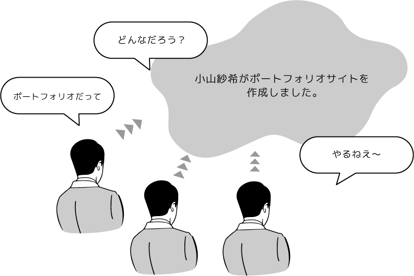
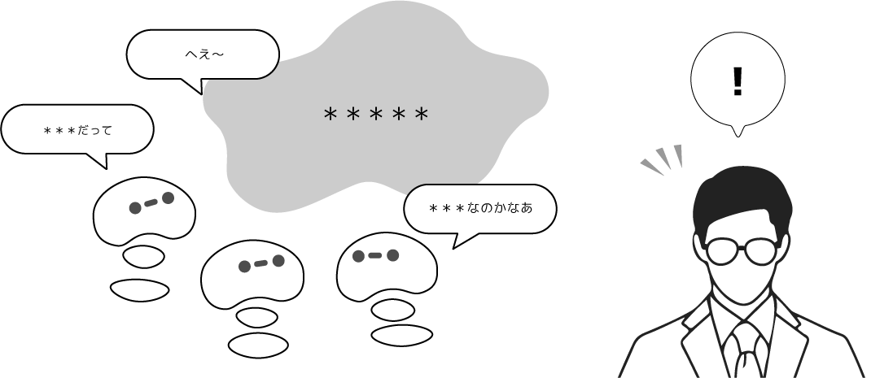
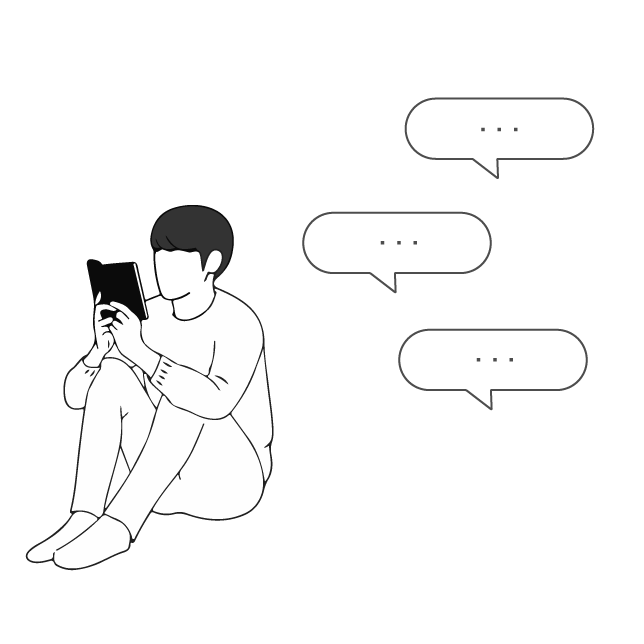
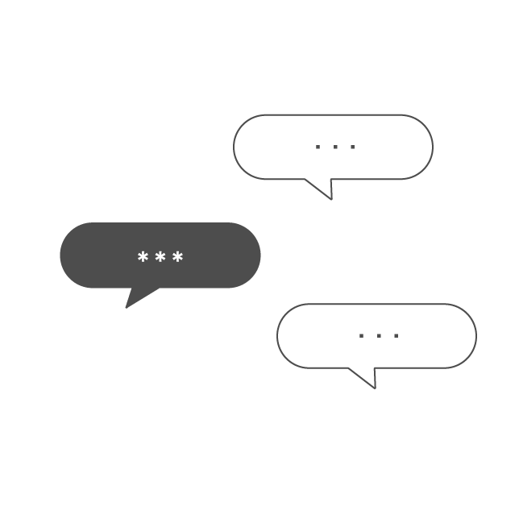
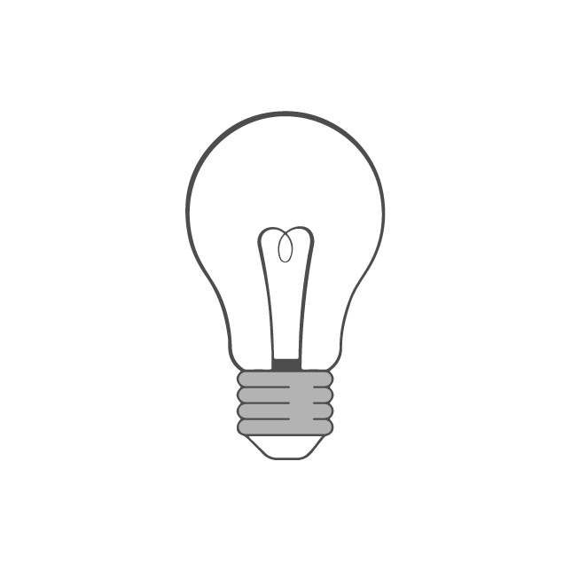
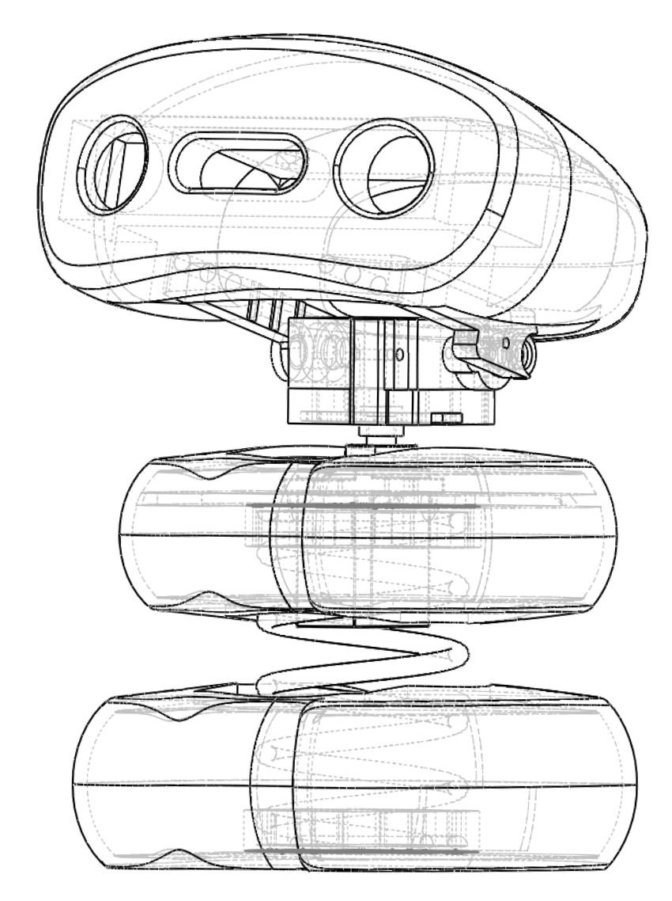

study
「 あのね、えっとね ... 」
子どもたちのおしゃべりのような会話に
つい耳を傾けてしまう
私たちは複数のロボットが会話をする多人数会話の
インタラクションデザインについて研究しています
background
周囲の会話につい耳をかたむけてしまうことはありませんか？
このように会話内容が周囲にひらかれた会話は
"Open Communication" のひとつです。

また、伝えることよりも繋がることを目的とした
会話を ”Rapport Talk” と言います。
これは報告や会議といった場面よりも、雑談などによくみられる形で、
共通の話題に対して会話の参加者は並ぶ関係にあります。
concept
Open Communication × Rapport Talk

そこで私たちは Rapport Talk を用いた Open Communication の場を作る
おしゃべりエージェントの研究をしています。
feature

応答責任が生じない
傍観的立ち位置のため
会話への参加義務が生じない

共感や参加を引き出す
Rapport Talk により
発言へのハードルを下げる

オーバーハード効果
間接的な情報取得により
納得感が高くなる
コンテンツにはニュースを採用しており、ユーザーへの間接的な情報提供を行います。
implementation

CAD design
頭部にはAruduino Micro,
首にはピッチ軸・ヨー軸に回転可能なサーボモータを搭載。
SolidWorks を用いて設計を行いました。
coding skill
MeCab , CaboCha 等のライブラリを使用して
自然言語処理・形態素解析を行います。
1つのニュースデータから複数の発話を生成し、
エージェント同士の会話を実現しています。

開発環境 ： ROS Python